PROCUREMENT
責任採購 共享價值的推動者
供應商向來是南亞科技在營運上最重要的夥伴，我們希望加強彼此之間的合作關係，進而創造更大的價值，並共同分享合作所帶來的價值與效益，一起攜手邁向更具永續價值的未來。
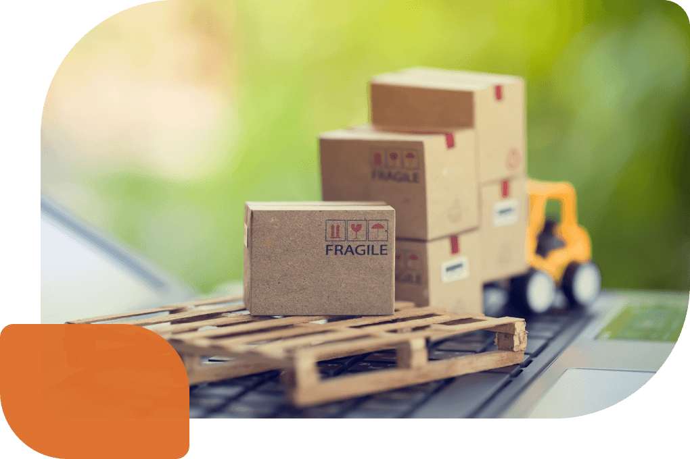
- 自2019年起~2024年針對藍領階層的移工仲介費/交通費/服務費/體檢費/證件費…等項目累計退費金額 11,078 萬
- 3TG+Cobalt相關金屬礦物RMI認可之冶煉廠 255 家
- 因國際進出口戰略相關限制之金屬RMI認可之冶煉廠 29 家
重大議題策略與績效
永續供應鏈管理
永續供應商發展與管理策略
南亞科技針對生產直接材料供應商的遴選條件，除需通過ISO 9001與ISO 14001第三方驗證外，亦須經過嚴謹的評估審查，透過電子化供應商評估管理系統，以品質、交期、服務、成本、技術、永續經營等六大面向進行評估；其中永續管理指標 (永續經營)評分占比為19%，以確保供應商符合本公司在永續供應商管理的要求，並於成為供應商後，南亞科技會透過稽核，進一步確認永續供應商管理之落實度。
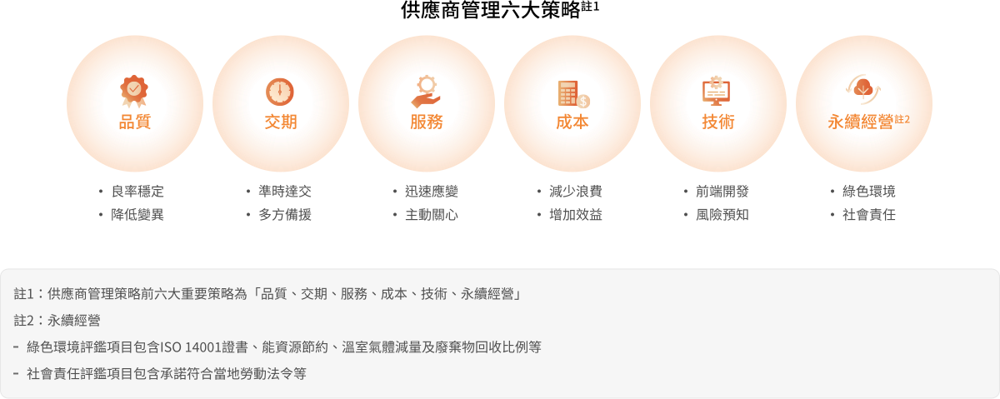
-
永續供應鏈風險控管
落實供應商自評問卷之風險評估，並透過稽核與追蹤改善，強化供應商風險管理。
-
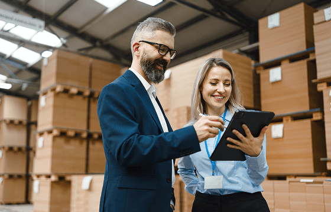
供應鏈合作與交流以合作與互助為基礎，透過定期辦理供應商研討會及供應商評鑑，引導供應商提升社會面、經濟面與環境面的效益，以達整體供應鏈之永續發展。
-
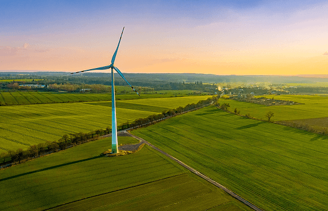
提升供應鏈永續力南亞科技於追求經濟效益同時關注環境及社會面的永續議題，並持續與供應商合作推動永續議題專案。
-
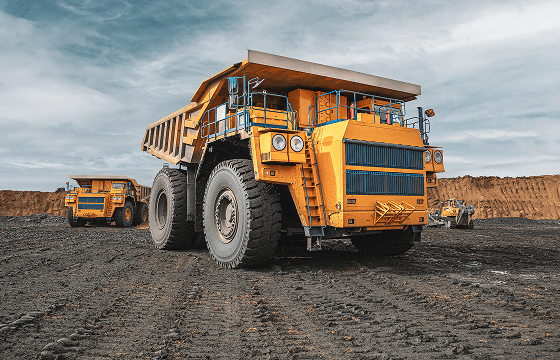
負責任礦產採購南亞科技承諾致力於無衝突礦產的管理與負責任的採購策略，以滿足當前和未來市場、法律與法規的期望。
永續供應鏈管理流程
南亞科技建立完善的供應鏈管理流程，透過永續規範、主動風險評估、永續性風險評估問卷、永續性稽核/輔導改善，以及供應商能力建置等五大流程之循環作為，確保供應商符合我們的標準與要求。透過風險調查與稽核機制，掌握供應鏈的風險狀況，並輔導供應商進行改善與能力建置，逐步提升整體供應鏈的永續績效。
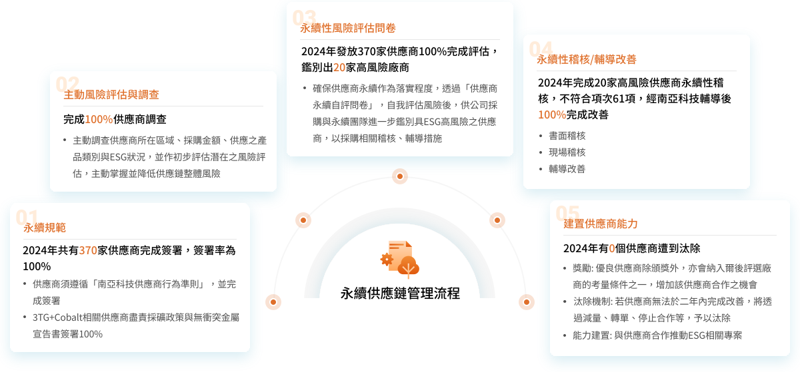
供應鏈永續專案
為因應永續趨勢的變動及更新，持續透過供應鏈永續專案提升供應商永續性，並強化供應商的永續意識及能力。
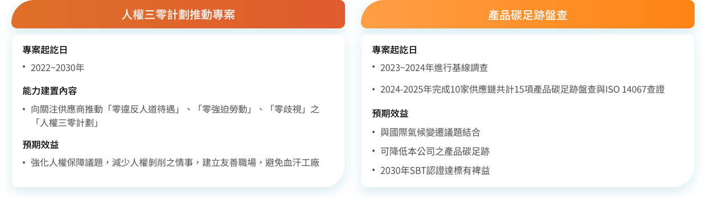
提升供應鏈永續力
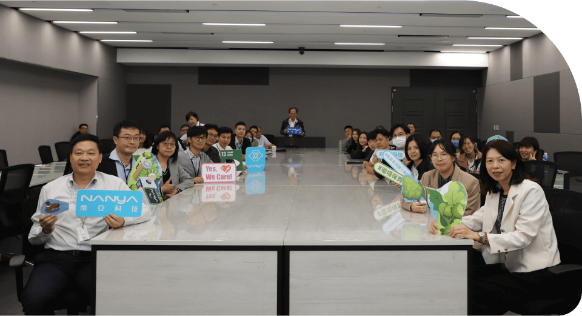
2024自然與氣候共好供應鏈工作坊
永續發展共好倡議
鑑於TNFD為新興的風險與財務揭露框架，南亞科技於2024年11月26日舉辦了「自然與氣候共好供應鏈工作坊」，邀請近30家供應商的氣候、自然議題的專責人員參加，產業別涵蓋化學製造、電子、塑膠製品等多個行業領域，努力深化供應商對自然永續議題的了解，並強化對上游供應鏈的自然與氣候策略管理。
在此次工作坊中，南亞科技特別邀請國立台灣科技大學與國立台北科技大學的專家學者，分享關於氣候與自然永續管理的理論及實踐方向，並由供應商-福懋科技的永續發展團隊分享其低碳化及生物多樣性專案的經驗，福懋科技以「最好的能源是節能」來分享節能專案導入案例，展示如何在生產過程中減少能源消耗與碳排放，其分享不僅具體呈現節能實務經驗，也進一步提升價值鏈共好的氛圍。
負責任礦產採購管理
南亞科技承諾致力於無衝突礦產的管理與負責任的採購策略，發布負責任礦產採購政策，以滿足當前和未來市場、法律與法規的期望。為符合無衝突金屬之要求並肩負責任商業聯盟 (Responsible Business Alliance, RBA)責任與滿足負責任礦產保證流程 (Responsible Minerals Assurance Process, RMAP)的目標。南亞科技於2022年起，在產品標籤上增加「遵循RMI政策及無衝突礦產」(Comply with RMI Policy and Conflict Mineral-Free)的聲明，已宣示本公司產品皆符合負責任礦產倡議 (Responsible Minerals Initiative, RMI)管理政策要求且無使用衝突礦產。
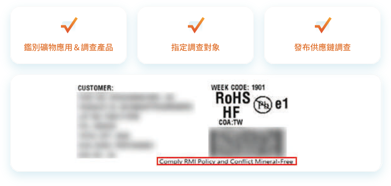
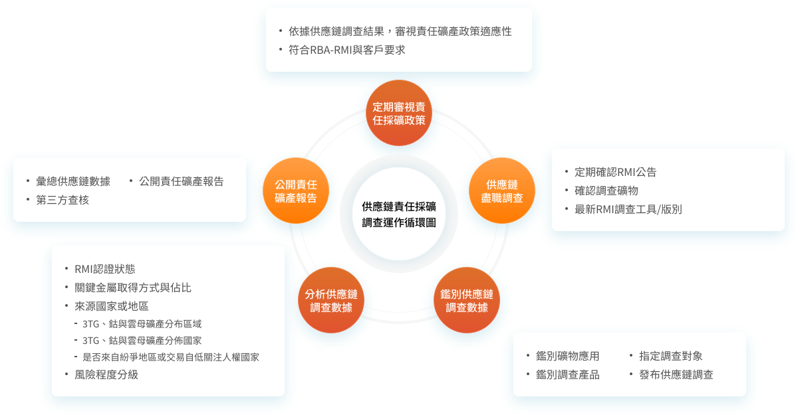
責任礦產盡責調查結果
2024年在供應鏈調查中識別出284家冶煉廠或供應商調查資訊，其中使用目前使用在本公司產品供應鏈之金 (Gold)、鉭 (Tantalum)、錫 (Tin)、鎢 (Tungsten)、鈷 (Cobalt)與雲母 (Mica)金屬礦物，總共有255家冶煉廠或供應商回報資訊。其中約占有27.5％ (78家)冶煉廠回報礦源可能來自剛果民主共和國或毗鄰國家，亦有來自回收或報廢金屬，據供應鏈回報這78家冶煉廠均確認礦產來源均符合「責任礦產確保計畫」 (Responsible Minerals Assurance Process, RMAP)政策要求並經「責任礦產倡議」(Responsible Minerals Initiative, RMI)小組核可為合法冶煉廠。
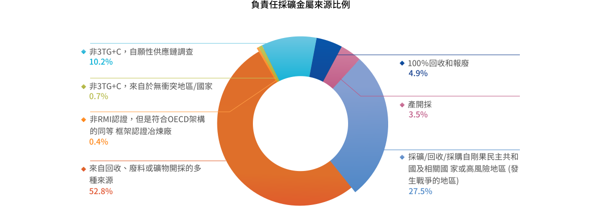
請參閱完整報告書內容
閱讀全文
 最新消息
最新消息
 粉絲專頁
粉絲專頁